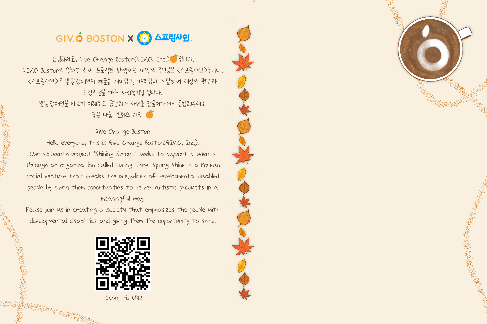
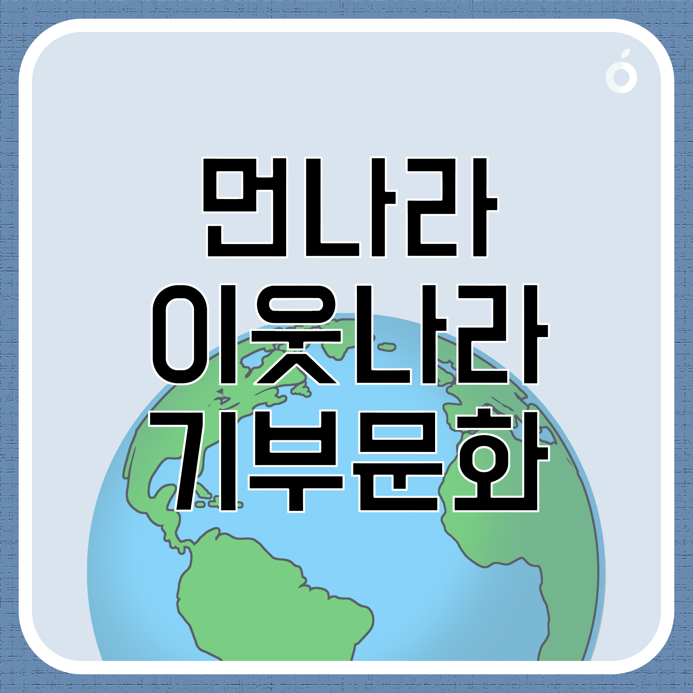
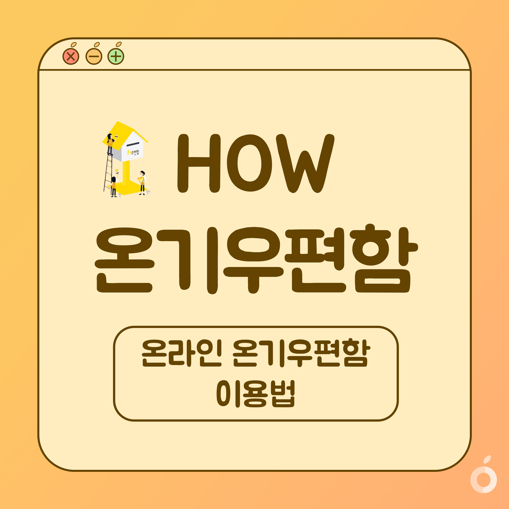
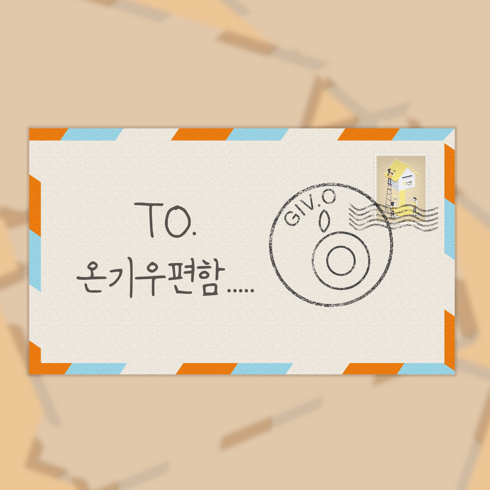
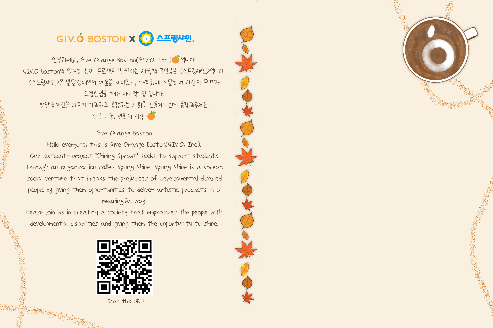
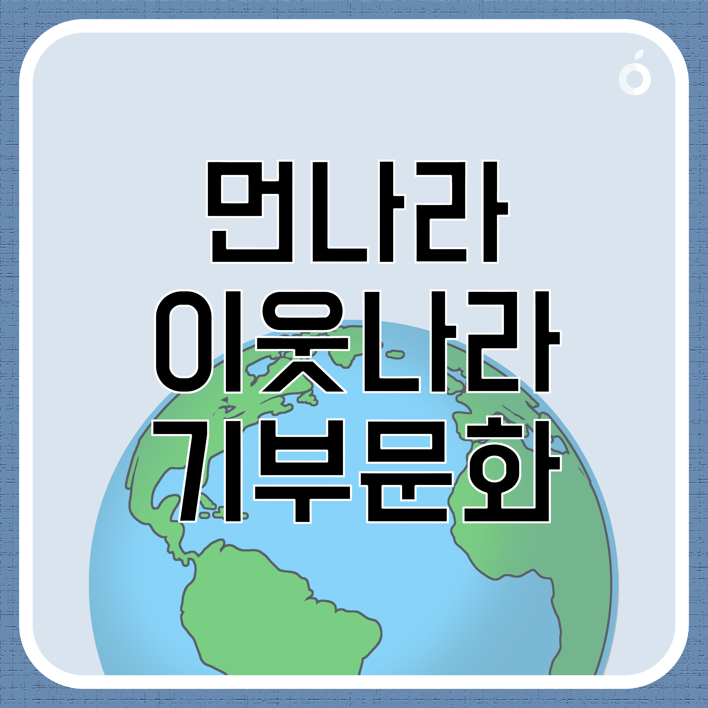
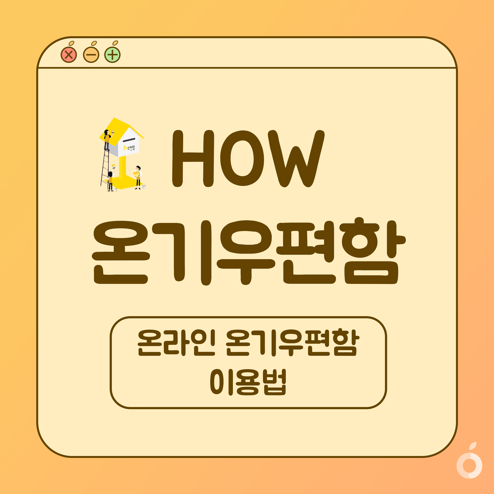
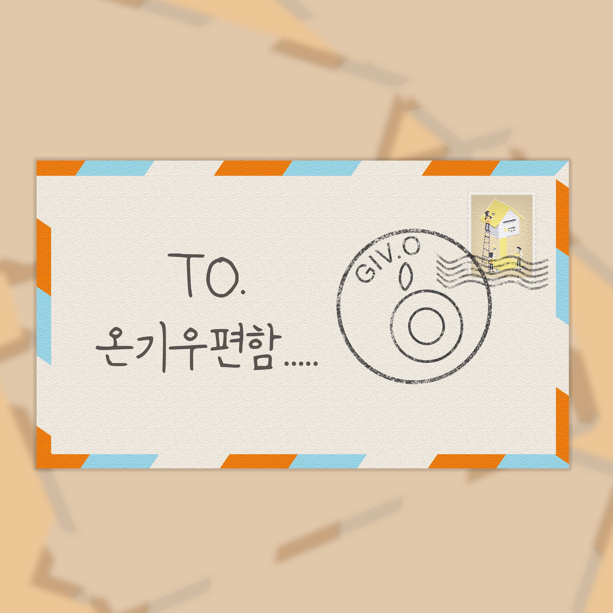

Give Orange Boston
 







- Participation: 100%
- Production: Card News, Postcard


Give Orange Inc. is a non-profit fundraising organization, consisting of Korean international students in US. Give Orange Boston is an active branch, with members from Korean students in Boston. Every year, it selects one beneficiary to raise money for, which ultimately becomes the identity of that year.
The responsibility as a visual production team member is to produce card news to post on Giv.O Boston’s official Instagram Page. The goal is to spread the idea of donation throughout society. Although designs are made individually, for every draft, members give feedback via Slack. Then the drafts are revised, and all members view them again. Therefore, the process as a whole is communicative and collaborative.